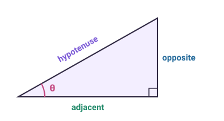
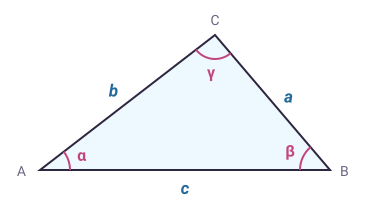
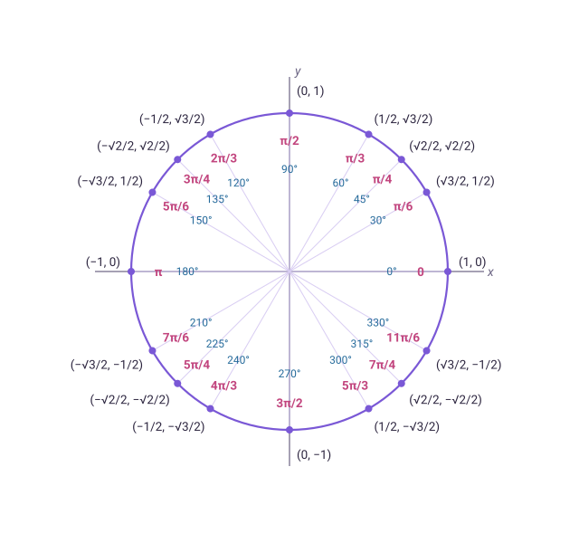

Definitions
Right triangle, \(0 < \theta < \pi/2\)

\[
\sin\theta = \frac{\text{opposite}}{\text{hypotenuse}} \quad
\cos\theta = \frac{\text{adjacent}}{\text{hypotenuse}} \quad
\tan\theta = \frac{\text{opposite}}{\text{adjacent}}
\]
\[
\csc\theta = \frac{\text{hypotenuse}}{\text{opposite}} \quad
\sec\theta = \frac{\text{hypotenuse}}{\text{adjacent}} \quad
\cot\theta = \frac{\text{adjacent}}{\text{opposite}}
\]
Unit circle, any \(\theta\)
Measure \(\theta\) counterclockwise from the positive \(x\) axis; the ray at \(\theta\) meets the circle \(x^2 + y^2 = 1\) at \((x, y)\).
\[
\cos\theta = x \quad \sin\theta = y \quad \tan\theta = \frac{y}{x} \]
\[ \sec\theta = \frac{1}{x} \quad \csc\theta = \frac{1}{y} \quad \cot\theta = \frac{x}{y}
\]
On a circle of radius \(r\): \((x, y) = (r\cos\theta,\ r\sin\theta)\), and an arc of angle \(\theta\) has length \(r\theta\).
Domain, range, period
\(n\) is any integer. \(\sin(\omega\theta)\) and \(\cos(\omega\theta)\) have period \(2\pi/\omega\); \(\tan(\omega\theta)\) has period \(\pi/\omega\).
Exact values
Degrees and radians
\[ \pi \text{ rad} = 180^\circ \qquad \theta_{\text{rad}} = \theta^\circ \cdot \frac{\pi}{180} \qquad \theta^\circ = \theta_{\text{rad}} \cdot \frac{180}{\pi} \]
Basic identities
Quotient and reciprocal
\[ \tan\theta = \frac{\sin\theta}{\cos\theta} \quad \cot\theta = \frac{\cos\theta}{\sin\theta} \]
\[ \csc\theta = \frac{1}{\sin\theta} \quad \sec\theta = \frac{1}{\cos\theta} \quad \cot\theta = \frac{1}{\tan\theta} \]
Pythagorean
\[ \sin^2\theta + \cos^2\theta = 1 \qquad \tan^2\theta + 1 = \sec^2\theta \qquad 1 + \cot^2\theta = \csc^2\theta \]
Even and odd
\[ \sin(-\theta) = -\sin\theta \quad \cos(-\theta) = \cos\theta \quad \tan(-\theta) = -\tan\theta \]
\[ \csc(-\theta) = -\csc\theta \quad \sec(-\theta) = \sec\theta \quad \cot(-\theta) = -\cot\theta \]
Periodic and shifts
\[ \sin(\theta + 2\pi n) = \sin\theta \quad \cos(\theta + 2\pi n) = \cos\theta \]
\[ \tan(\theta + \pi n) = \tan\theta \]
\[ \sin(\theta + \pi) = -\sin\theta \qquad \cos(\theta + \pi) = -\cos\theta \]
\[ \sin(\theta + \tfrac{\pi}{2}) = \cos\theta \quad \cos(\theta + \tfrac{\pi}{2}) = -\sin\theta \]
Cofunction
\[ \sin(\tfrac{\pi}{2} - \theta) = \cos\theta \quad \cos(\tfrac{\pi}{2} - \theta) = \sin\theta \quad \tan(\tfrac{\pi}{2} - \theta) = \cot\theta \]
\[ \csc(\tfrac{\pi}{2} - \theta) = \sec\theta \quad \sec(\tfrac{\pi}{2} - \theta) = \csc\theta \quad \cot(\tfrac{\pi}{2} - \theta) = \tan\theta \]
Sum, difference, double and half angle
Sum and difference
\[ \sin(\alpha \pm \beta) = \sin\alpha\cos\beta \pm \cos\alpha\sin\beta \]
\[ \cos(\alpha \pm \beta) = \cos\alpha\cos\beta \mp \sin\alpha\sin\beta \]
\[ \tan(\alpha \pm \beta) = \frac{\tan\alpha \pm \tan\beta}{1 \mp \tan\alpha\tan\beta} \]
Double angle
\[ \sin 2\theta = 2\sin\theta\cos\theta \qquad \tan 2\theta = \frac{2\tan\theta}{1 - \tan^2\theta} \]
\[ \cos 2\theta = \cos^2\theta - \sin^2\theta = 2\cos^2\theta - 1 = 1 - 2\sin^2\theta \]
Power reduction
\[ \sin^2\theta = \frac{1 - \cos 2\theta}{2} \qquad \cos^2\theta = \frac{1 + \cos 2\theta}{2} \]
\[ \tan^2\theta = \frac{1 - \cos 2\theta}{1 + \cos 2\theta} \]
Half angle
\[ \sin\frac{\theta}{2} = \pm\sqrt{\frac{1 - \cos\theta}{2}} \qquad \cos\frac{\theta}{2} = \pm\sqrt{\frac{1 + \cos\theta}{2}} \]
\[ \tan\frac{\theta}{2} = \frac{\sin\theta}{1 + \cos\theta} = \frac{1 - \cos\theta}{\sin\theta} \]
The sign of each square root is the sign of the function in the quadrant where \(\theta/2\) lies.
Products and sums
Product to sum
\[ \sin\alpha\sin\beta = \tfrac12\big[\cos(\alpha - \beta) - \cos(\alpha + \beta)\big] \]
\[ \cos\alpha\cos\beta = \tfrac12\big[\cos(\alpha - \beta) + \cos(\alpha + \beta)\big] \]
\[ \sin\alpha\cos\beta = \tfrac12\big[\sin(\alpha + \beta) + \sin(\alpha - \beta)\big] \]
\[ \cos\alpha\sin\beta = \tfrac12\big[\sin(\alpha + \beta) - \sin(\alpha - \beta)\big] \]
Sum to product
\[ \sin\alpha + \sin\beta = 2\sin\frac{\alpha + \beta}{2}\cos\frac{\alpha - \beta}{2} \]
\[ \sin\alpha - \sin\beta = 2\cos\frac{\alpha + \beta}{2}\sin\frac{\alpha - \beta}{2} \]
\[ \cos\alpha + \cos\beta = 2\cos\frac{\alpha + \beta}{2}\cos\frac{\alpha - \beta}{2} \]
\[ \cos\alpha - \cos\beta = -2\sin\frac{\alpha + \beta}{2}\sin\frac{\alpha - \beta}{2} \]
Inverse trigonometric functions
\(\sin^{-1}x = \arcsin x\), \(\cos^{-1}x = \arccos x\), \(\tan^{-1}x = \arctan x\). The \(-1\) is not an exponent: \(\sin^{-1}x \ne 1/\sin x\).
Inverse properties
\[ \sin(\sin^{-1}x) = x,\ \ \cos(\cos^{-1}x) = x \ \text{ for } x \in [-1, 1] \]
\[ \tan(\tan^{-1}x) = x \ \text{ for all } x \]
\[ \sin^{-1}(\sin\theta) = \theta \text{ for } \theta \in [-\tfrac{\pi}{2}, \tfrac{\pi}{2}] \]
\[ \cos^{-1}(\cos\theta) = \theta \text{ for } \theta \in [0, \pi] \]
\[ \tan^{-1}(\tan\theta) = \theta \text{ for } \theta \in (-\tfrac{\pi}{2}, \tfrac{\pi}{2}) \]
Two-argument arctangent
\(\operatorname{atan2}(y, x)\) is the angle of the point \((x, y)\), in \((-\pi, \pi]\). It equals \(\tan^{-1}(y/x)\) only when \(x > 0\); for \(x < 0\) it adds or subtracts \(\pi\), and it is defined at \(x = 0\). Example: \(\operatorname{atan2}(1, -1) = 3\pi/4\), while \(\tan^{-1}(1/{-1}) = -\pi/4\).
All take and return radians. Clamp the argument of acos and asin to \([-1, 1]\): a dot product of unit vectors can come out as 1.0000001 in floating point, and Math.acos of that is NaN.
Laws of sines, cosines and tangents

Law of sines
\[ \frac{\sin\alpha}{a} = \frac{\sin\beta}{b} = \frac{\sin\gamma}{c} \]
Law of cosines
\[ a^2 = b^2 + c^2 - 2bc\cos\alpha \qquad b^2 = a^2 + c^2 - 2ac\cos\beta \]
\[ c^2 = a^2 + b^2 - 2ab\cos\gamma \]
Law of tangents
\[ \frac{a - b}{a + b} = \frac{\tan\frac12(\alpha - \beta)}{\tan\frac12(\alpha + \beta)} \]
\[ \frac{b - c}{b + c} = \frac{\tan\frac12(\beta - \gamma)}{\tan\frac12(\beta + \gamma)} \qquad
\frac{a - c}{a + c} = \frac{\tan\frac12(\alpha - \gamma)}{\tan\frac12(\alpha + \gamma)} \]
Mollweide's formula and area
\[ \frac{a + b}{c} = \frac{\cos\frac12(\alpha - \beta)}{\sin\frac12\gamma} \]
\[ \text{Area} = \tfrac12 ab\sin\gamma = \tfrac12 bc\sin\alpha = \tfrac12 ac\sin\beta \]
The angles sum to \(\alpha + \beta + \gamma = \pi\).
Trigonometry in graphics
Angle between vectors
\[ \mathbf{u}\cdot\mathbf{v} = |\mathbf{u}|\,|\mathbf{v}|\cos\theta \qquad |\mathbf{u}\times\mathbf{v}| = |\mathbf{u}|\,|\mathbf{v}|\sin\theta \]
\[ \theta = \operatorname{atan2}\big(|\mathbf{u}\times\mathbf{v}|,\ \mathbf{u}\cdot\mathbf{v}\big) \]
The atan2 form stays accurate near \(\theta = 0\) and \(\theta = \pi\), where \(\cos^{-1}\) of the normalized dot product loses digits.
2D rotation by \(\theta\), counterclockwise
\[ \begin{pmatrix} x' \\ y' \end{pmatrix} = \begin{pmatrix} \cos\theta & -\sin\theta \\ \sin\theta & \cos\theta \end{pmatrix} \begin{pmatrix} x \\ y \end{pmatrix} \]
This is the sum formula: a point at angle \(\varphi\) and radius \(r\) moves to \(\big(r\cos(\varphi + \theta),\ r\sin(\varphi + \theta)\big)\).
Quaternion from axis and angle
\[ q = \big(\sin\tfrac{\theta}{2}\,\hat{\mathbf{n}},\ \cos\tfrac{\theta}{2}\big) = (x, y, z, w) \]
Field of view
\[ \tan\frac{\text{fov}_v}{2} = \frac{h/2}{d} \qquad f = \frac{1}{\tan(\text{fov}_v/2)} \]
\[ \tan\frac{\text{fov}_h}{2} = a\tan\frac{\text{fov}_v}{2} \]
\(h\) is the height of the view at distance \(d\), \(f\) the projection matrix's \(y\) scale, \(a\) the aspect ratio (width over height).
Small angles (\(\theta\) in radians)
\[ \sin\theta \approx \theta \qquad \tan\theta \approx \theta \qquad \cos\theta \approx 1 - \frac{\theta^2}{2} \]
At \(\theta = 0.1\) (5.7°), \(\sin\theta \approx \theta\) is off by 0.17%.
Degrees in Unity
Mathf functions use radians; Transform.Rotate, eulerAngles, Quaternion.Euler, Quaternion.AngleAxis and Camera.fieldOfView use degrees. Convert with Mathf.Deg2Rad and Mathf.Rad2Deg.
Unit circle

Each point is \((\cos\theta, \sin\theta)\). Angles in radians (pink) and degrees (blue).